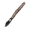
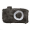
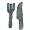

{% load staticfiles %}
  <head>
    <script src="http://ajax.googleapis.com/ajax/libs/jquery/1.9.1/jquery.min.js"></script>
        <meta name="viewport" content="width=device-width, initial-scale=1, maximum-scale=1">  
       
        <script type="text/javascript">
          // Wait for the page to load.
                            $(function() {  
                    var pull        = $('#pull');  
                        menu        = $('nav ul');  
                        menuHeight  = menu.height();  
                  
                    $(pull).on('click', function(e) {  
                        e.preventDefault();  
                        menu.slideToggle();  
                    });  
                }); 
                $(window).resize(function(){  
                    var w = $(window).width();  
                    if(w > 320 && menu.is(':hidden')) {  
                        menu.removeAttr('style');  
                    }  
                });   
        </script>
  </head>
  <nav class="clearfix">  
            <ul class="clearfix">
                 <li><a href="#">Home</a></li>
                 <li><a href="#">DIY</a></li>
                 <li><a href="#">Photography</a></li>
                 <li><a href="#">Recipes</a></li>
                 <li><a href="#">Everyday</a></li>
                 <li><a href="#">Portfolio</a></li>
            </ul>
            <a href="#" id="pull">  
        </nav>  